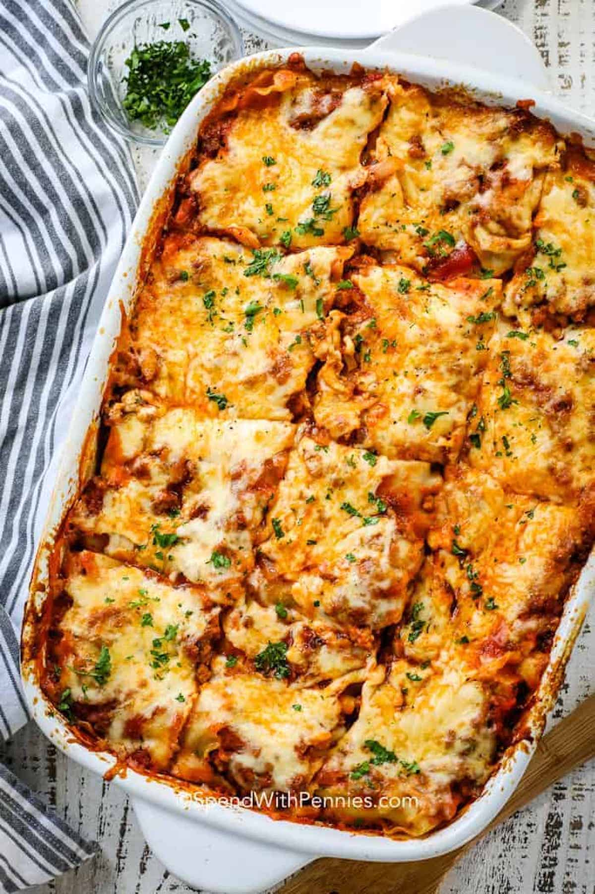

Odin Recipes
Home

Ingredients
- 12 lasagna noodles uncooked
- 2 cups shredded mozzarella cheese
- ¼ cup shredded Parmesan cheese
Tomato Sauce
- 1/2 pound lean ground beef
- 1/2 pound Italian sausage
- 1 yellow onion diced
- 2 cloves garlic minced
- 36 ounces pasta sauce
- 2 tablespoons tomato paste
- 1 teaspoon Italian seasoning
- 1/2 teaspoon salt more to taste
Cheese Mixture
- 2 cups ricotta cheese or cottage cheese
- 1/2 cup chopped fresh parsley
- 1 large egg beaten
- 1 1/2 cups shredded mozzarella cheese
- 1/2 cup shredded Parmesan cheese
- 1/2 teaspoon salt
Instructions
- Junte todos os ingredientes do tomato sauce na panela e deixe cozinahr por 30 minutos
- Misture todos os ingredientes do cheese mixture em uma tijela.
- Crie camadas com a massa, molho de tomate e mistura de queijo
- Leve ao forno aquecido a 200C por 45 minutos